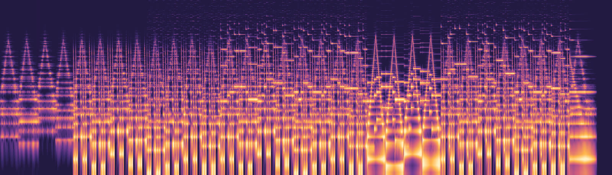

Minor Drift
A synthwave piece in C minor, made by one subtractive synthesizer and four audio effects. By Joe Nguyen and Zachary Roseman.

Select the picture or a section to jump to that point. The picture is the song's own spectrogram, with time running left to right and pitch rising from bottom to top. Download the full-quality WAV.
The piece
| Length | 1:20 |
| Format | 44,100 Hz, 16-bit stereo |
| Notes in the score | 490 |
| Tempo | 100 beats per minute, 4/4 |
Who built what
| Subtractive synthesizer | Joe Nguyen |
| Effects | Zach |
| Sequencer and audio routing | Both |
Where each feature is used
| Feature | Where you can hear it |
|---|---|
| Sawtooth wave | Pad and bass |
| Square wave | Lead melody |
| Pulse wave | Arpeggio |
| Triangle wave | Bells in the breakdown |
| Amplitude envelopes | Slow pad swells, short bass and arpeggio notes |
| Polyphony | Four-note pad chords under the bass, arpeggio, and lead |
| Reson filter | Bass, pad, and lead |
| Filter envelopes | Bass plucks, slow pad sweeps, wah bass in the breakdown |
| Ring modulation | Bells in the breakdown |
| Chorus | Pad, except measures 9 to 12 |
| Flanging | Arpeggio, and pad in measures 9 to 12 |
| Reverb | Pad, lead, and bells |
| Effect sends | Every part has its own mix of dry signal and effects |
How the program works
The program reads an XML score and creates one instrument object per note. For every audio frame, each active instrument generates one stereo sample, the mixer adds it to the dry bus and the effect buses, and the effects process those buses into the final frame.
The audio is streamed one frame at a time, and the song is never stored in an array. The only stored audio is short: the one-cycle wave tables, and effect delay lines of at most 0.2 seconds.
We started from the Step 5 synthesizer. We moved two jobs into the shared system: CInstrument reads each note's send levels, and CEffectsMixer handles routing and mixing. CreateInstrument builds the right instrument for each note.
Use of AI
This piece was composed with AI help. Claude wrote the melody, chords, arrangement, and the script that generates the score, based on the project's requirements. AI assistants also helped write and test the code. Claude was used for the synthesizer and ChatGPT for the effects.